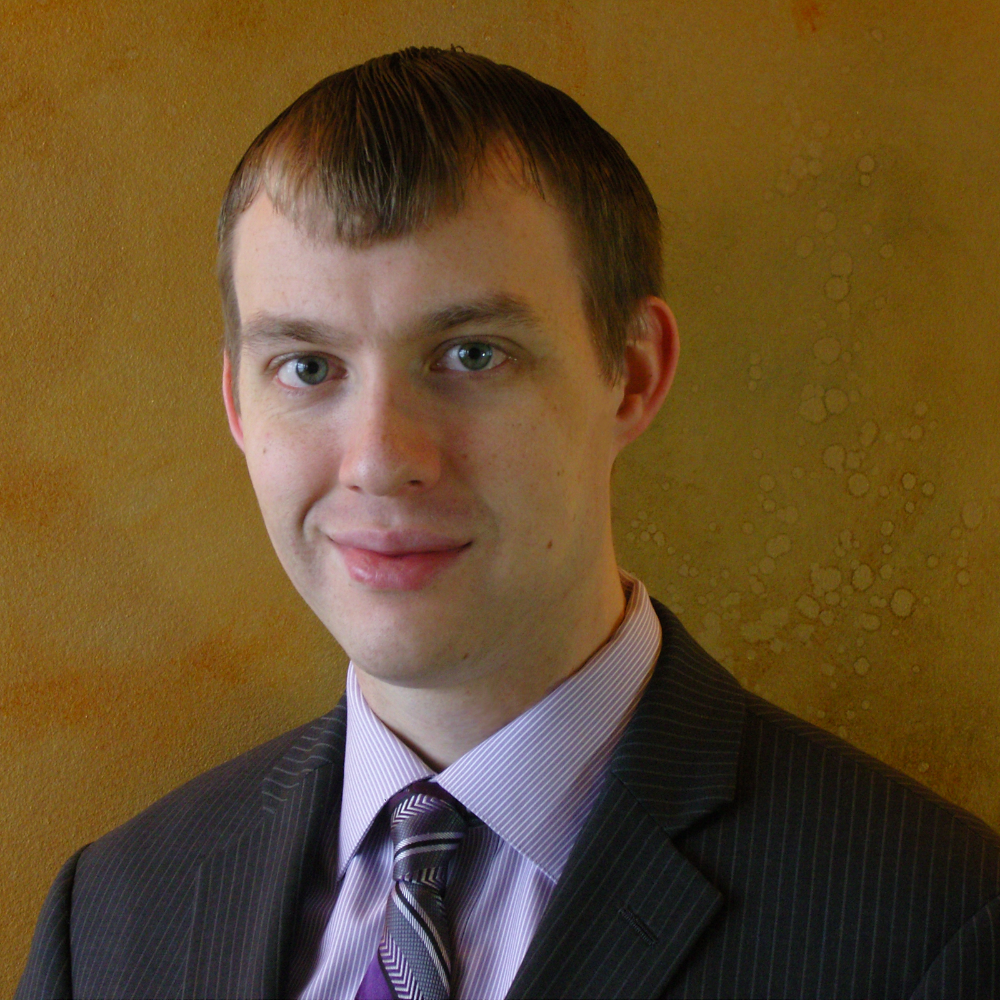

Welcome to Russell C Jackson's Webpage.
Under Construction
Biography
 Russell began his Engineering education at Rose-Hulman Institute of Technology (Terre Haute, Indiana). While attending Rose, Russell was first exposed to academic research. After graduating from Rose-Hulman, he attended Case Western Reserve University (Cleveland Ohio) in order to pursue a doctoral degree in electrical engineering. While there, his research has focused on medical robotics with an emphasis on computer vision.
While at Rose-Hulman, Russell conducted research on electromagnetic waves, in particular the electro-magnetic compatibility of high speed circuits for use in computer design. His work culminated in the creation of a transmission line modeling tool. This tool simulates the response of a passive circuit connected to a set of transmission lines. This software was mentioned in the paper “Developing an SI tool set for engineering design discovery, physical insight, and education” published at the 2009 International Symposium on Electromagnetic compatibility which took place from August 17-21, 2009 in Austin Texas. Russell Jackson graduated Summa Cum Laude from Rose-Hulman Institute of Technology on May 30th 2009. He graduated with a Bachelor’s of Science in Electrical Engineering and a Bachelor’s of Science in Mathematics. His Mathematics thesis was titled “Solution of Electric Wave Propagation on Uniform Coupled Transmission Lines”.
Russell began his research at Case Western Reserve University in July of 2009. When he first began his work, he focused primarily on computer vision. In particular surgical computer vision. His work utilizes calibrated stereo camera systems in order to track surgical suture threads as well as surgical suture needles (Publication pending). Additionally, Russell has also made progress analysing the forces generated during a suture needle drive. The suture needle drive work was published in the International Conference on Robotics and Automation, in 2012 and 2013. Russell is also assisting his advisor, M. Cenk Cavusoglu on a MRI based heart ablation catheter.
In addition to his many research activities, Russell led department graduate students as the president of the Graduate Student Association (GSA) of the Electrical Engineering and Computer Science (EECS) department in the Case Western Reserve School of Engineering. He funded student activities by inaugurating the EECS yard sale. The purpose of the sale was to liquidate unused research equipment. This succeeded in raising money for student events as well as saving laboratory space. Some of the events that the yard sale funded included happy hours, barbeques, and even a whirlyball excursion. During his tenure as the president of the EECS GSA, Russell helped to plan research demonstrations for the 2014 Engineer’s Week Banquet at Case Western Reserve University. He organized more than 20 demos and posters. His responsibilities included arranging transport, ensuring that the demos were ready, and finally the demo layout at the venue. The demos gave banquet attendees an opportunity to explore the wide scope of research that goes on in the EECS department at Case Western.
After Graduating from Case Western Reserve University, Russell hopes to continue to perform cutting edge research in the field of robotics and computer vision.
Authors and Contributors
Please contact the site owner (Russell Jackson) regarding any questions or concerns.